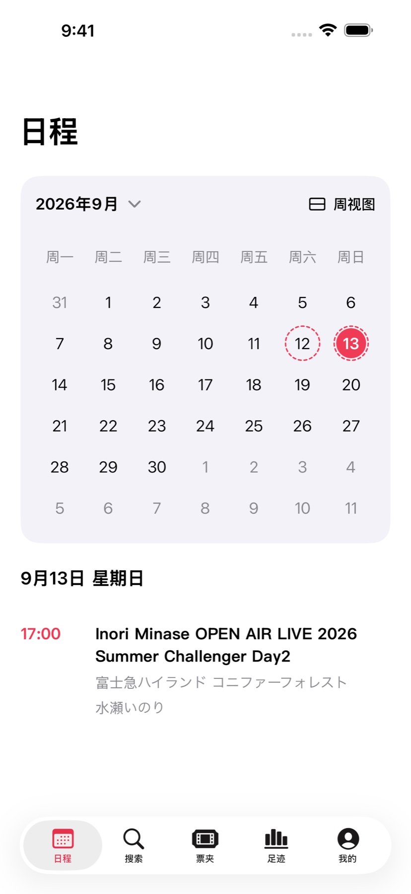
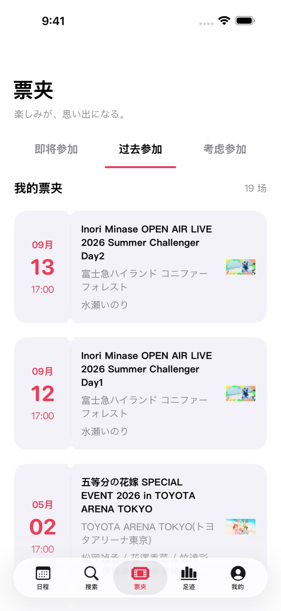
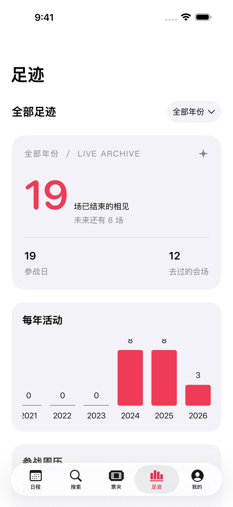

让日历里，
多一些期待。
月历与周历自由切换，有演出的日子清楚标记。选中日期，当天的演出就在日历下方，出发前一眼就能找到。
月历与周历 / 每日演出安排
下一场演出的期待，和散场后不舍的余韵。用まち整理行程、收好参加记录，把属于自己的现场留在身边。
完全免费 · 无内购 · 无订阅 / iPhone 与 iPad / iOS 17 及以上

有期待的日子，一眼看见。
真实 App 界面，参加状态为演示记录。
月历与周历自由切换，有演出的日子清楚标记。选中日期，当天的演出就在日历下方，出发前一眼就能找到。
即将参加、参加过、考虑参加，分别收进票夹。也可以自己添加演出和出演者，把过去的记录慢慢补齐。

见面最多的出演者、熟悉的会场、有演出的每一周。按年份回顾足迹，再把参战小票存入相册，留下一年的纪念。

把感想写进手记，用喜欢的照片作海报。出演者头像、显示顺序，以及个人头像与签名，都可以按喜好调整。
连接 EVENTERNOTE 账号，轻松导入过去的参加记录，让之后的参加记录和关注保持同步。自定义演出、照片、个人资料等内容，可以通过 iCloud 同步到自己的其他设备。
まち 1.0 已开放 TestFlight 测试。 从下一场演出，或最想记住的那一场开始。
加入 TestFlight在 App Store 下载 Apple 的 TestFlight App。
点击本页「加入 TestFlight」，打开まち的测试页面。
在 TestFlight 内安装 App，开始记录自己的演出。
联系与反馈
反馈问题或建议 ↗可以。在「我的 → 数据同步」连接 EVENTERNOTE 账号，即可导入过去的参加记录和关注，并同步之后的变更。iCloud 同步可在同一页面分别设置。
演出搜索与浏览使用 EVENTERNOTE 的演出和出演者数据，也支持自行添加演出与出演者。出演者照片使用 AniList、已配置的 TMDB，以及部分出演者的 YouTube，也可以换成自己上传的照片。
使用基本功能无需添加。若需要 TMDB 的出演者照片，可在「我的 → 设置 → 照片服务」填写自己的 API key。
支持日文、简体中文、台湾正体中文、香港繁体中文和英文，可在 App 设置中切换。
测试名额或招募状态可能影响加入。请更新 TestFlight 后重试，也可以通过 GitHub 支持入口反馈。
可以通过 TestFlight 提交反馈，或在 GitHub 支持入口记录问题与建议。提供设备型号、iOS 与 App 版本、复现步骤，会更便于排查。